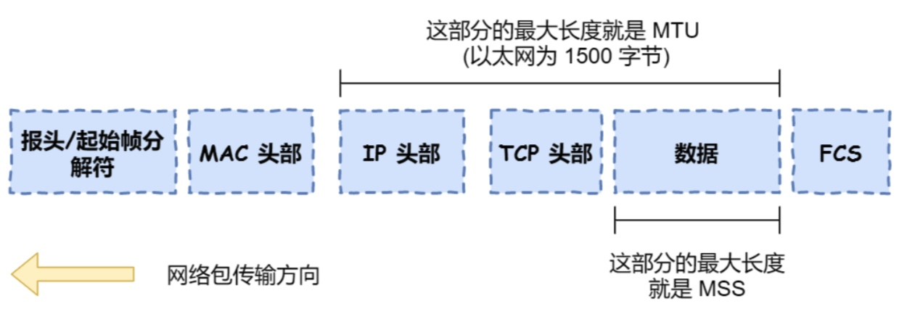

UDP
首部格式
源端口（16 bit）、目的端口（16 bit）包长度、校验和
和 TCP 区别
- 连接：UDP 不面向连接，传输数据前不需要建立连接
- 服务对象：UDP 可以一对多、多对多，TCP 只能一对一
- 可靠性：UDP 尽最大努力交付，不保证可靠，没有保证可靠的一系列机制
- 分片：TCP 数据如果大于 MSS 限制，需要在传输层进行分片组装；UDP 数据如果大于 MTU 限制，会在 IP 层分片组装
TCP
首部格式
源端口（16 bit）、目的端口（16 bit）序号（32 bit）、确认号（32 bit）：用来解决网络包乱序和丢包的问题控制位ACK：为 1 时，确认号才有效，除了最初建立连接时的 SYN 包之外该位必须为 1SYN：为 1 时，表示希望建立连接FIN：为 1 时，表示之后不会再有数据发送，希望断开连接RST：为 1 时，强制断开连接
...
三次握手
1. 握手过程
- 客户端发送请求「SYN 报文」，SYN=1，ACK=0，序号=x，不携带数据
- 服务端收到后发送「SYN + ACK 报文」，SYN=1，ACK=1，序号=y，确认号=x+1，不携带数据
- 客户端收到后发出「ACK 报文」，确认号=y+1，序号=x+1，可以携带数据
- 服务端收到后建立连接
2. 为什么需要第三次握手？
- 阻止重复历史连接：如果一个「旧的 SYN」比「新的 SYN」报文早到达了服务器，此时服务器返回一个「SYN + ACK」报文，客户端收到后可以根据自身上下文判断出序列号是否过期超时，过期会发送一个「RST」报文给服务器中止。
- 同步双方初始序列号：序列号关乎着数据传输的可靠，客户端发送初始序列号后，服务端返回 ACK 的同时也是在发送一个服务端的序列号，然后第三次握手时客户端回应 ACK。
3. 为什么二次握手和四次握手不行？
- 二次握手：无法防止历史连接的建立，造成资源浪费，也无法同步双方序列号
- 四次握手：理论上可行，但是二三次可以合并为一步，三次是理论上最少可靠连接建立
MSS & MTU

- MTU：IP 层，一个网络包的最大长度
- MSS：TCP 层，报文能容纳的「数据」的最大长度
1. 为什么 IP 层会分片，还需要 TCP 层根据 MSS 分片？
因为 IP 协议没有超时重传和序列号机制，如果一个 IP 分片丢失，接收方不知道，整个 TCP 报文都需要重传，经过 TCP 层分片后，如果某一片丢失，重发也只是已 MSS 为单位，增加重传效率。
SYN 攻击
攻击者短时间伪造不同 IP 地址的 SYN 报文，服务器每收到一个 SYN，就要进入 SYN_RCVD 状态，发出「SYN + ACK」报文，但等不到「ACK」应答。久而久之就会占满整个 SYN 接受队列，不能正常提供服务。
1. 如何避免？
- 修改 linux 内核参数，控制队列大小和队列满时的操作
- 启用 SYN cookie 功能，当 SYN 队列满了以后，后续的 SYN 包不进入 SYN 队列，而是计算一个 cookie 以「SYN + ACK」返回客户端，服务器收到「ACK」后，如果合法直接放入 Accept 队列。
四次挥手
1. 过程
- 客户端发送「FIN 报文」，FIN = 1
- 服务端收到后发出「ACK 报文」，此时进入半关闭状态，服务端能发给客户端，客户端不能发给服务端
- 服务端把数据发完后需要关闭时，发送「FIN 报文」
- 客户端收到后发出「ACK」，然后等待 2MSL 后释放连接
- 服务端收到「ACK」后释放连接
2. 为什么需要四次挥手？
发送「FIN 报文」的一方，仅仅表示他的数据发送完了，另一方可能还有未发送完的数据，所以二三步需要分开发送
导致了比连接多一次。
3. time_wait 为什么是 2 MSL？
MSL 是报文最大生存时间，Linux 默认为 30s。网络中可能存在来自于发送方的数据包，被服务器处理后返回，一来一回可能需要消耗 2 MSL 的时间。
就能够确保本连接报文从网络中消失， 不影响下一次连接。
TCP可靠传输
超时重传机制
超时时间 RTO = RTTs + 4*RTTd RTTs是加权平均往返时间，RTTd 是偏差的加权平均值
TCP流量控制
通过窗口字段控制对方发送速率
TCP滑动窗口
缓存的一部分，告诉对方自己的缓冲区大小，接受窗口只对最后一个按序到达的字节进行确认，发送方通过这个确认的序号可以知道序号之前的字节都已经被接受
TCP拥塞控制：针对网络的拥堵，并不一定接受窗口满了
慢开始与拥塞避免
发送数量（拥塞窗口）从1开始，收到确认后数量加倍，发送数量大于一个阈值，进入拥塞避免，每次数量只+1，当出现超时，阈值设为当前发送数量的一半后重新进入慢开始
快重传与快恢复
接收方每次只对最后一个已收到的有序报文进行确认，例如收到1 2和4，发送2的确认。 发送方如果收到3个重复的ack就认为报文丢失了，此时执行快重传，立即重传下一个报文3。（超时重传和快重传不一样，超时是一定时间没收到确认，快重传是连续收到三次一样的确认） 这种情况知识丢失个别报文，而不是拥塞，因此执行快恢复，阈值设为拥塞窗口的一半，拥塞窗口设为阈值，直接进入拥塞控制
参考：小林 coding - 图解网络